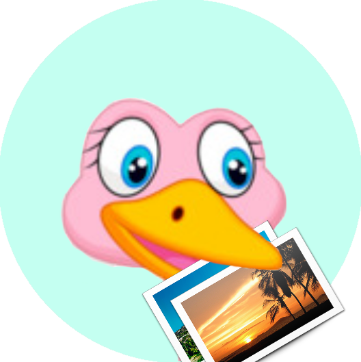

Дети с определенными ментальными нарушениями не могут общаться в привычной нам форме, они делают это по специальным методикам, с помощью пиктограмм. Таким детям крайне трудно общаться на любом расстоянии дальше одного помещения. Данный, специализированный мессенджер решит эту проблему и позволит детям общаться на любых расстояниях, при доступе в сеть и минимальной помощи родителей (или воспитателей).
